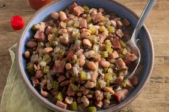

Beans Recipe

Description
Slow cooker pinto beans are tender, delicious, and easy! I developed this fabulous crockpot recipe after finding too many hard,
uncooked beans after cooking in a pot on the stove.
There's nothing more convenient than a set-and-forget meal in the slow cooker. And just when you think it can't get any better — how about a hearty set-and-forget meal that will be your new favorite comfort food?
It all starts with a package of dried pinto beans.
ingredients
- 1 pound dried pinto beans
- 1 pound black forest ham, cubed
- 1 medium onion, chooped
- ¾ medium green bell pepper, diced
- 2 medium celery ribs, chopped
- 3 cloves garlic, chopped
- 1 tablespoon dried oragano, or to taste
- 1 tablespoon lard
- 1 teaspoon ground cumin, or to taste
- 3 large bay leaves
- 5 cups chicken broth, or as needed to cover
steps
- Place beans in a large bowl and cover with water.
Allow to soak 8 hours to overnight. Drain.
- Gather all ingredients
- Place soaked pinto beans in a slow cooker. Add ham, onion, bell pepper, celery, garlic, oregano, lard, cumin, and bay leaves.
Pour in enough chicken broth to cover all ingredients.
- Pour in enough chicken broth to cover all ingredients.
- Cook on high until beans are very tender, 5 t0 6 hours
- Serve and Enjoy!